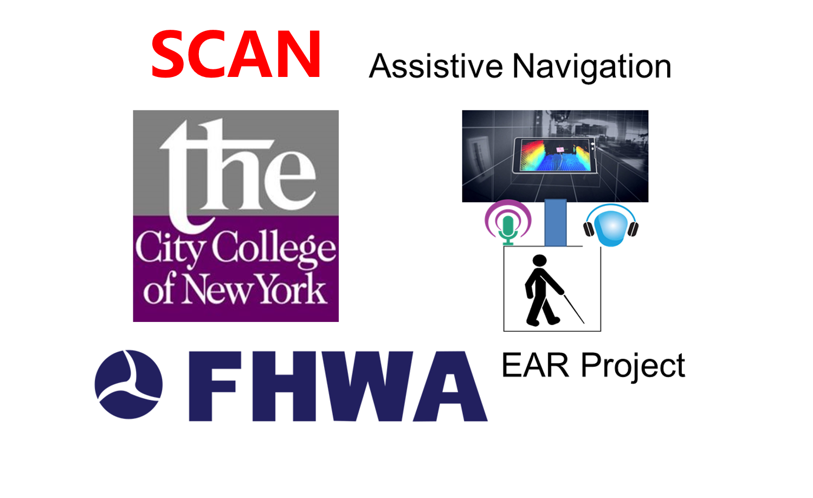
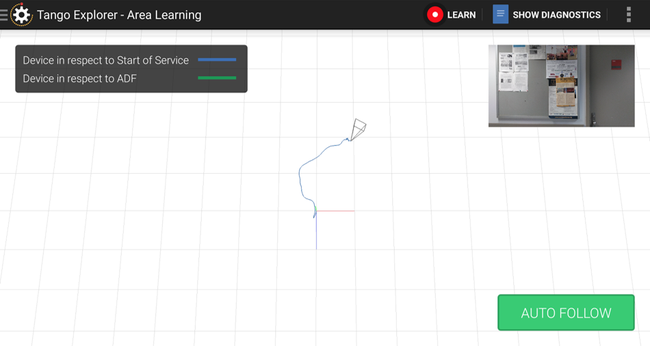
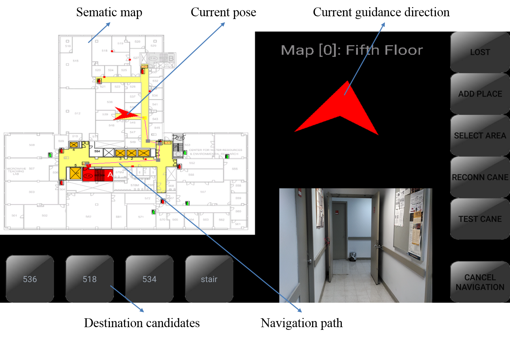
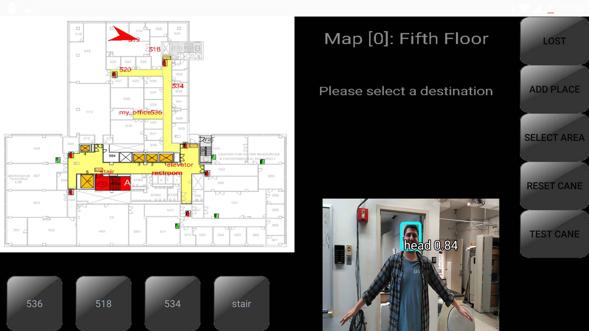
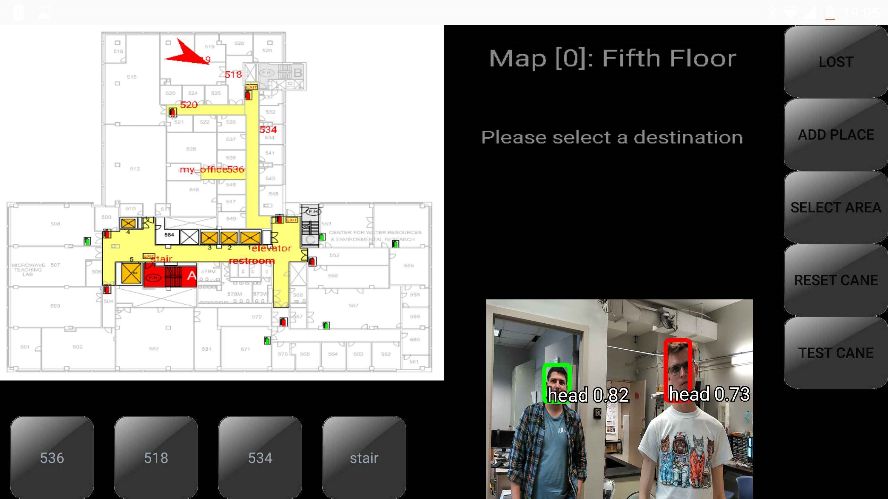
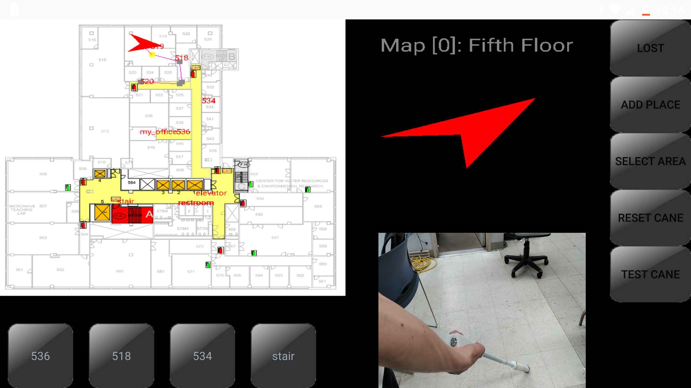

Smart Cane for Assistive Navigation (SCAN) to Help Blind Persons
2018-06-15
1 System Introduction
Smart Cane for Assistive Navigation (SCAN) is designed by CCNY Robotics Lab to provide indoor assistive navigation for the Blind & Visually Impaired (BVI).
Indoor assistive navigation system has been researched extensively in recent years with the fast evolution of mobile technologies, from applying robotics simultaneous localization and mapping (SLAM) approach, deploying infrastructure sensors to integrating semantic environment description.
SCAN software is designed to provide the environment spatial context-aware information and guidance suggestions.

In addition, a TinyYOLO (You-only-look-once) convolutional neural network (CNN) model is applied for real-time moving person detection.
2 Hardware and Software Support
SCAN software runs on the LENOVO Phab-2 Pro, the first Tango-enabled smartphone. The sensors embedded in the Tango-enabled smartphone include: an RGB-D camera providing both image and depth information, a wide-angle fisheye camera for motion tracking, a IMU for visual-inertial odometry augmentation, microphone and audio output for sonic and verbal feedback.

Google Tango’s visual position service (VPS) supports visual odometry and area description file (ADF) for loop-closure in SLAM. The ADF stores the visual key-frame features that are used for the feature matching. The loop-closure provides re-localization capability to correct drift errors accumulated from visual odometry. Tango explorer and Tango Area Manager are tools to access ADF.

3 Functions of SCAN
Online-alignment
To align semantic map with ADF, we need set the scaling and offset parameters using online alignment.
High-level Semantic Localization and navigation

Detection


4 Auxiliary Equipment: SmartCane to Select the Destination
